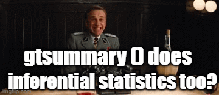
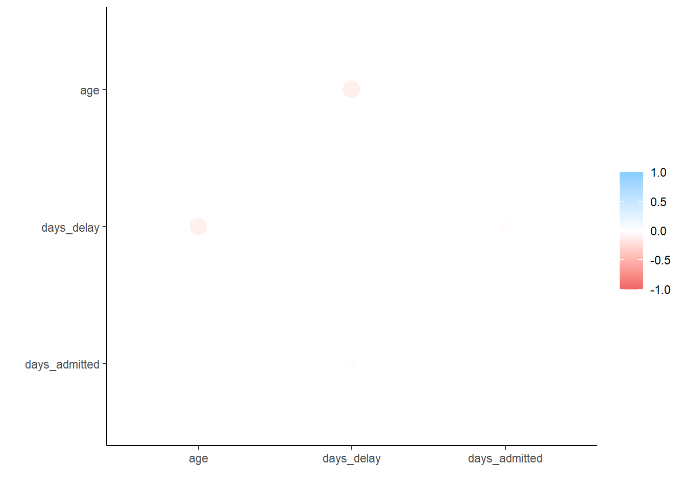

Inferential statistics form the bedrock of any complex analysis. Inferential statistics allow for conclusions or predictions about a larger population from the sampled data, providing the necessary basis for hypothesis testing. They provide an initial understanding of data, and an informed context for the application of more complex statistical or machine learning techniques.
Just to be consistent we what I said yesterday- before diving into the data always always skim the data first to get a quick feels
Show the solution
c19_df %>% skimr::skim()
Data summary
Name
Piped data
Number of rows
37165
Number of columns
15
_______________________
Column type frequency:
character
10
numeric
5
________________________
Group variables
None
Variable type: character
skim_variable
n_missing
complete_rate
min
max
empty
n_unique
whitespace
date
0
1
10
10
0
1013
0
date_announced
0
1
10
10
0
1009
0
date_positive
0
1
10
10
0
1007
0
date_dose1
0
1
0
10
22440
298
0
date_dose2
0
1
0
10
28038
267
0
date_dose3
0
1
0
10
35724
161
0
brand1
0
1
0
16
22440
8
0
brand2
0
1
0
16
28038
7
0
brand3
0
1
0
16
35724
6
0
state
0
1
5
17
0
16
0
Variable type: numeric
skim_variable
n_missing
complete_rate
mean
sd
p0
p25
p50
p75
p100
hist
age
0
1
62.66
16.59
0
51
64
75
130
▁▃▇▃▁
male
0
1
0.58
0.49
0
0
1
1
1
▆▁▁▁▇
bid
0
1
0.21
0.41
0
0
0
0
1
▇▁▁▁▂
malaysian
0
1
0.89
0.31
0
1
1
1
1
▁▁▁▁▇
comorb
0
1
0.79
0.41
0
1
1
1
1
▂▁▁▁▇
rstatix() for inferential statistics
Inferential statistics is a set of statistical procedures that allows us to draw conclusions about an entire population from a representative sample. The importance of inferential statistics lies in its ability to:
Generalize about a population: Inferential statistics enables researchers to make predictions or inferences about a population based on the observations made in a sample.
Test hypotheses: With inferential statistics, researchers can test a hypothesis to determine its statistical significance.
Study relationships: It allows researchers to examine the relationships between different variables in a sample and to generalize these relationships to the broader population.
We will not focus on the mathematics behind inferential statistics but more so the impementation within R. Nontheless, here is a quick summary of commonly used inferential statistical tests and when they are used:
T-tests (One-sample, Independent Two-sample, and Paired): These are used when we want to compare the means of one or two groups. For example, comparing the average height of men and women.
Analysis of Variance (ANOVA): ANOVA is used when comparing the means of more than two groups. For example, comparing the average income of people in three different cities.
Chi-square test: The chi-square test is used to determine if there is a significant association between two categorical variables. For example, examining the relationship between gender and voting behavior.
Correlation and Regression: Correlation is used to measure the strength and direction of the linear relationship between two variables. Regression is used to predict the value of one variable based on the value of another.
Each test has assumptions that need to be satisfied for the results to be accurate, so it’s essential to choose the right test for the data and research question at hand.
While it is possible to run these tests in base() R, we will skip that in this course since our grounding has all been carried out within the tidyverse(). If you wish to study inferential statistics using base () R you can have a look at this.
For the purposes of this course we shall take a deeper look at the rstatix package:
T-test
Use a formula syntax to specify the numeric and categorical columns for a two sample t-test:
# A tibble: 1 × 7
.y. group1 group2 n statistic df p
* <chr> <chr> <chr> <int> <dbl> <dbl> <dbl>
1 age 1 null model 37165 30.9 37164 6.96e-207
Or one sample t-tests by group
Show the solution
c19_df %>%group_by(male) %>%t_test(age ~1, mu =60)
# A tibble: 2 × 8
male .y. group1 group2 n statistic df p
* <int> <chr> <chr> <chr> <int> <dbl> <dbl> <dbl>
1 0 age 1 null model 15791 26.1 15790 6.14e-147
2 1 age 1 null model 21374 18.0 21373 5.33e- 72
Shapiro-Wilk test
Note: Sample size must be between 3-5000
Show the solution
c19_df %>%head(500) %>%# first 500 rows of case linelist, for example onlyshapiro_test(age)
# A tibble: 1 × 3
variable statistic p
<chr> <dbl> <dbl>
1 age 0.967 0.00000000413
Wilcoxon rank sum test
Show the solution
c19_df %>%wilcox_test(age ~ malaysian)
# A tibble: 1 × 7
.y. group1 group2 n1 n2 statistic p
* <chr> <chr> <chr> <int> <int> <dbl> <dbl>
1 age 0 1 4035 33130 31207398 0
Kruskal-Wallis test
Also known as the Mann-Whitney U test.
Show the solution
c19_df %>%kruskal_test(age ~ state)
# A tibble: 1 × 6
.y. n statistic df p method
* <chr> <int> <dbl> <int> <dbl> <chr>
1 age 37165 1368. 15 1.58e-282 Kruskal-Wallis
Chi-squared test
The chi-square test function accepts a table, so first we create a cross-tabulation. There are many ways to create a cross-tabulation but here we use tabyl() from janitor and remove the left-most column of value labels before passing to chisq_test().
# A tibble: 1 × 6
n statistic p df method p.signif
* <dbl> <dbl> <dbl> <int> <chr> <chr>
1 37165 2461. 0 1 Chi-square test ****
gtsummary() package for Inferential statistics
Use gtsummary if you are looking to add the results of a statistical test to a pretty table that was created with this package. Performing statistical tests of comparison with tbl_summary is done by adding the add_p function to a table and specifying which test to use. It is possible to get p-values corrected for multiple testing by using the add_q function. Run ?tbl_summary for details.

T-tests
Compare the difference in means for a continuous variable in two groups. For example, compare the mean age by patient outcome.
Show the solution
c19_df %>%select(age, malaysian) %>%# keep variables of interesttbl_summary( # produce summary tablestatistic = age ~"{mean} ({sd})", # specify what statistics to showby = malaysian) %>%# specify the grouping variableadd_p(age ~"t.test") # specify what tests to perform
Characteristic
0, N = 4,0351
1, N = 33,1301
p-value2
age
49 (14)
64 (16)
<0.001
1 Mean (SD)
2 Welch Two Sample t-test
Wilcoxon rank sum test
Compare the distribution of a continuous variable in two groups. The default is to use the Wilcoxon rank sum test and the median (IQR) when comparing two groups. However for non-normally distributed data or comparing multiple groups, the Kruskal-wallis test is more appropriate.
Show the solution
c19_df %>%select(age, malaysian) %>%# keep variables of interesttbl_summary( # produce summary tablestatistic = age ~"{median} ({p25}, {p75})", # specify what statistic to show (this is default so could remove)by = malaysian) %>%# specify the grouping variableadd_p(age ~"wilcox.test") # specify what test to perform (default so could leave brackets empty)
Characteristic
0, N = 4,0351
1, N = 33,1301
p-value2
age
48 (41, 56)
66 (54, 76)
<0.001
1 Median (IQR)
2 Wilcoxon rank sum test
Kruskal-wallis test
Compare the distribution of a continuous variable in two or more groups, regardless of whether the data is normally distributed.
Show the solution
c19_df %>%select(age, state) %>%# keep variables of interesttbl_summary( # produce summary tablestatistic = age ~"{median} ({p25}, {p75})", # specify what statistic to show (default, so could remove)by = state) %>%# specify the grouping variableadd_p(age ~"kruskal.test") # specify what test to perform
Characteristic
Johor, N = 4,7411
Kedah, N = 2,7561
Kelantan, N = 1,4281
Melaka, N = 1,2151
Negeri Sembilan, N = 1,5461
Pahang, N = 1,0371
Perak, N = 2,1681
Perlis, N = 1991
Pulau Pinang, N = 2,0851
Sabah, N = 3,2121
Sarawak, N = 1,7961
Selangor, N = 11,0281
Terengganu, N = 9051
W.P. Kuala Lumpur, N = 2,8611
W.P. Labuan, N = 1591
W.P. Putrajaya, N = 291
p-value2
age
62 (49, 73)
64 (52, 76)
68 (58, 77)
64 (50, 75)
66 (55, 76)
64 (53, 75)
70 (58, 79)
71 (60, 81)
69 (55, 79)
67 (56, 78)
71 (59, 79)
60 (48, 71)
67 (57, 77)
63 (50, 74)
60 (48, 72)
68 (60, 73)
<0.001
1 Median (IQR)
2 Kruskal-Wallis rank sum test
Chi-squared test
Compare the proportions of a categorical variable in two groups. The default statistical test for add_p() when applied to a categorical variable is to perform a chi-squared test of independence with continuity correction, but if any expected call count is below 5 then a Fisher’s exact test is used.
Show the solution
c19_df %>%select(malaysian, bid) %>%# keep variables of interesttbl_summary(by = bid) %>%# produce summary table and specify grouping variableadd_p() # specify what test to perform
Characteristic
0, N = 29,2551
1, N = 7,9101
p-value2
malaysian
27,297 (93%)
5,833 (74%)
<0.001
1 n (%)
2 Pearson's Chi-squared test
Correlations in R
Correlation between numeric variables can be investigated using the tidyverse corrr package. It allows you to compute correlations using Pearson, Kendall tau or Spearman rho. The package creates a table and also has a function to automatically plot the values.
Show the solution
correlation_tab <- c19_df %>%mutate(across(contains("date"), ~as.Date(., format ="%Y-%m-%d")), #change character to dates\ fromatdays_delay=as.numeric(date_announced-date),days_admitted=as.numeric(date-date_positive)) %>%select(age, days_delay, days_admitted) %>%# keep only columns of interestcorrelate() # create correlation table (using default pearson)
# A tibble: 3 × 4
term age days_delay days_admitted
<chr> <dbl> <dbl> <dbl>
1 age NA -0.0994 -0.0308
2 days_delay -0.0994 NA -0.0530
3 days_admitted -0.0308 -0.0530 NA
Plot a scatteplot of correlations
Show the solution
## plot correlations rplot(correlation_tab)

Finally you can create a nifty little heatmap. You can calculate a correlation data frame using the correlate() function from corrr, reshape it into a long format with melt(), and then create a heatmap with ggplot2: